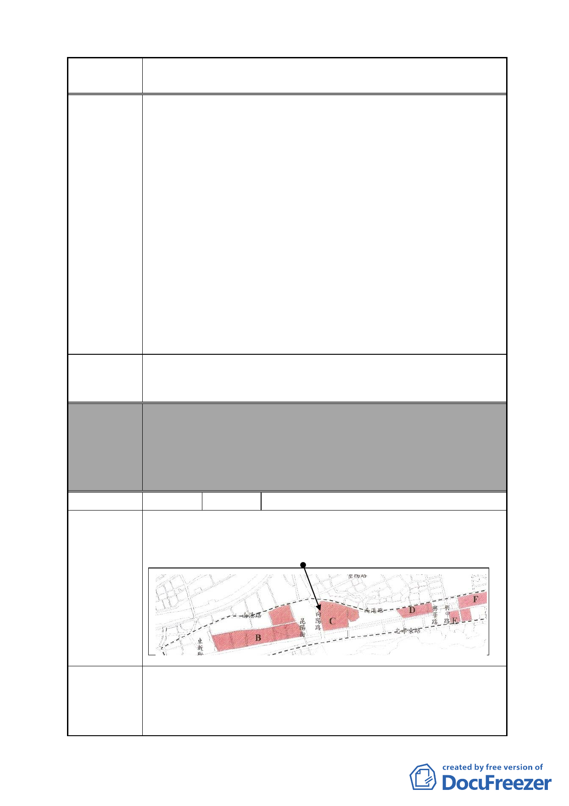

案 名 變更臺北市南港區鐵路地下化沿線土地主要計畫案
建議辦法
威脅恐嚇，自己卻是以逸待勞。本席批評，台電的行為不但是
讓市府及地方民代揹黑鍋，更是讓兩塊預定地周邊的居民寢食
難安，時時擔心變電所就在我家旁邊。
本席表示，處理本案之始，就已經多次提醒台電公司應該
將變電所放置於遠離住宅區及商業用地，並且具體建議擇定
202 兵工廠釋出用地興建，並應積極與國防部溝通，避免延遲
時程，造成用電困難。不料，台電公司非但沒有積極運作，更
大玩兩面手法，一方面召開新址說明會，一方面又要求將原有
變電所用地北移，足見台電心中對於變電所用地早有定見，將
與居民溝通的共識棄於不顧。
本席指出，都市發展的過程，變電所雖然有其必要，但市
民意識亦伴都市發展隨成長，台電選擇變電所用地必定更加困
難，台電不應該再用既定的思惟考量變電所擇址問題。因此要
求都委會否決台電將變電所北移之申請，並要求台電重新規劃
用址務必遠離目前即將全面發展之忠孝東路及南港路沿線。
我家旁邊不要有變電所！訴請玉成變電所遷移至 202 兵工
廠！
委員會
決議
編號
本案除文字誤繕應再作修正外，其餘依市府本次會議所送修
正計畫書內容通過。
（依市府本次會議所送修正計畫書，本案將變電所用地自本
次計畫範圍剔除，俟台電公司另尋適當替代的設置地點，另
案辦理都市計畫變更）
52 陳情人 台灣電力股份有限公司台北北區營業處
本處線路維修中心位於向陽路與南港路 2 段圓環邊（如附
圖），地址：南港路 2 段 157 號，座落基地為南港段四小段
476-1、479-7 及 557 地號，土地面積共 1775 ㎡。
陳情地點
陳情理由
1.係於 88 年時為因應服務南港地區用戶，特規劃南港線路維
修中心，興建地上 10 層地下 1 層建築，於 89 年取得建造執
照，92 年底完工使用，其主要負責南港地區 24 小時用電故
障搶修維護，以及電力調度，並服務南港地區用戶用電申請
- 56 -